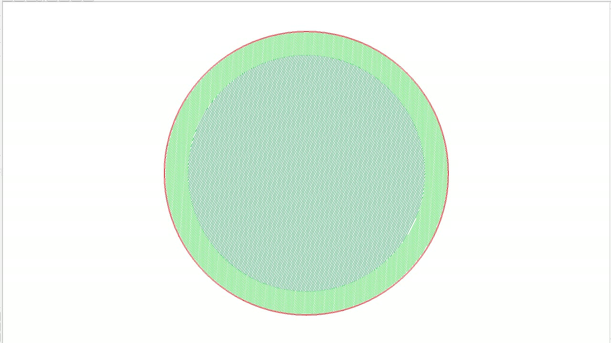
Hull and coreSplits the part volume into an outer hull and an inner core with its own hatching.
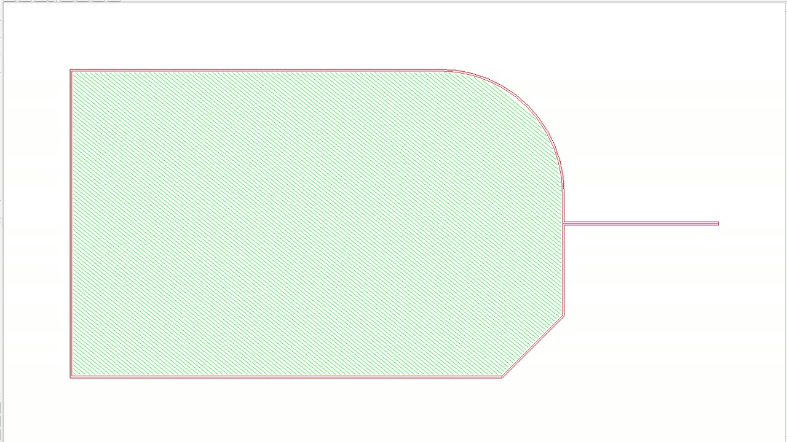
First border (beam compensation)Outermost contour of every island, shifted inwards by the beam compensation.
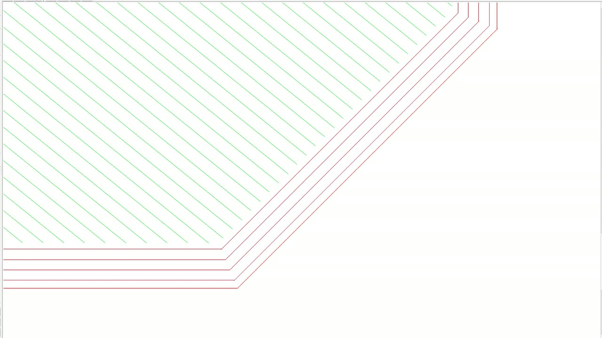
Following bordersAdditional contours (2nd to N-th border) inside the first border.
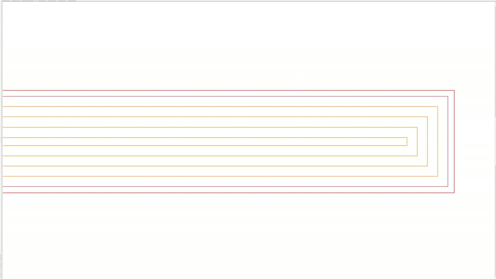
Fill contoursContours between the borders and the hatching.
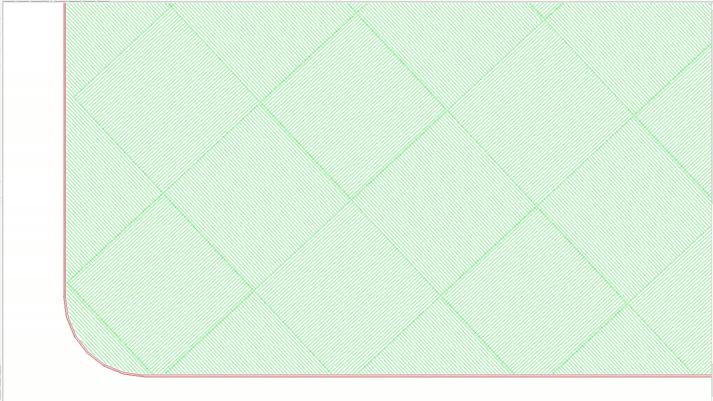
HatchingHatching of the part volume: meander, stripe, chess, hexagon and offset patterns.
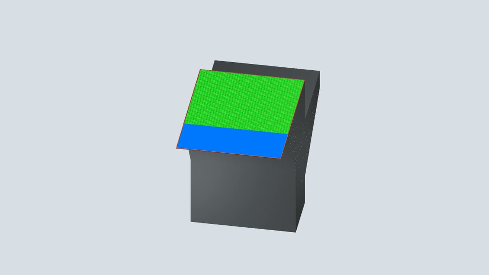
Multi-layer overhang (downskin)Areas without enough solid material below are exposed with downskin settings.
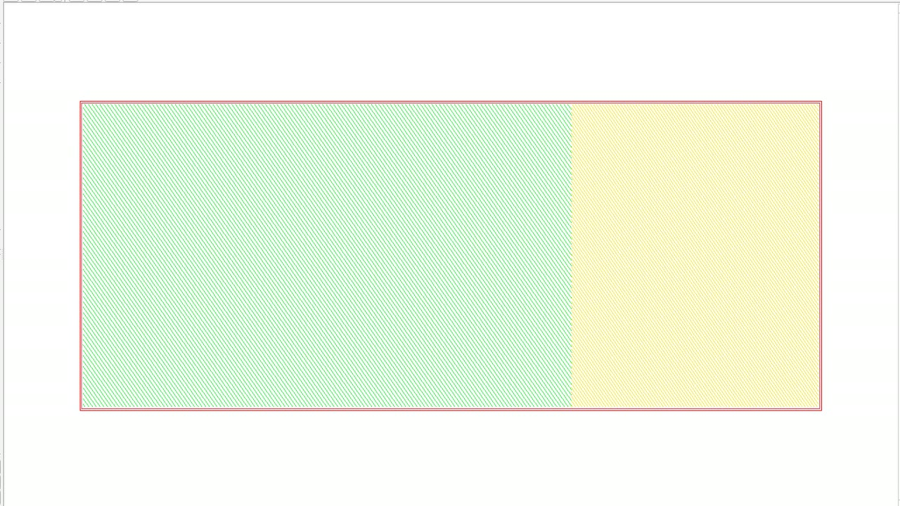
Upskin (one layer)Areas that are not covered by the next layer are exposed with upskin settings.
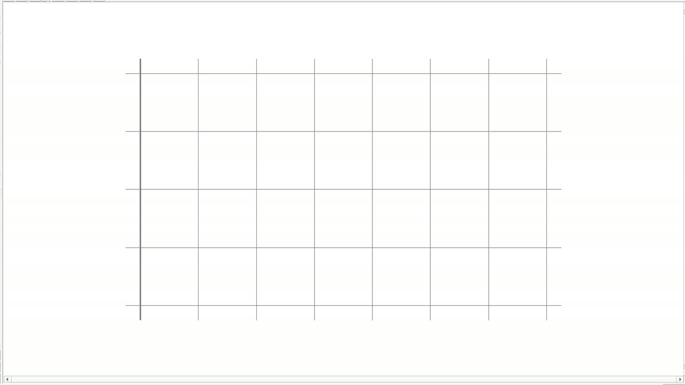
Wall supportsExposure of supports that consist of open lines.
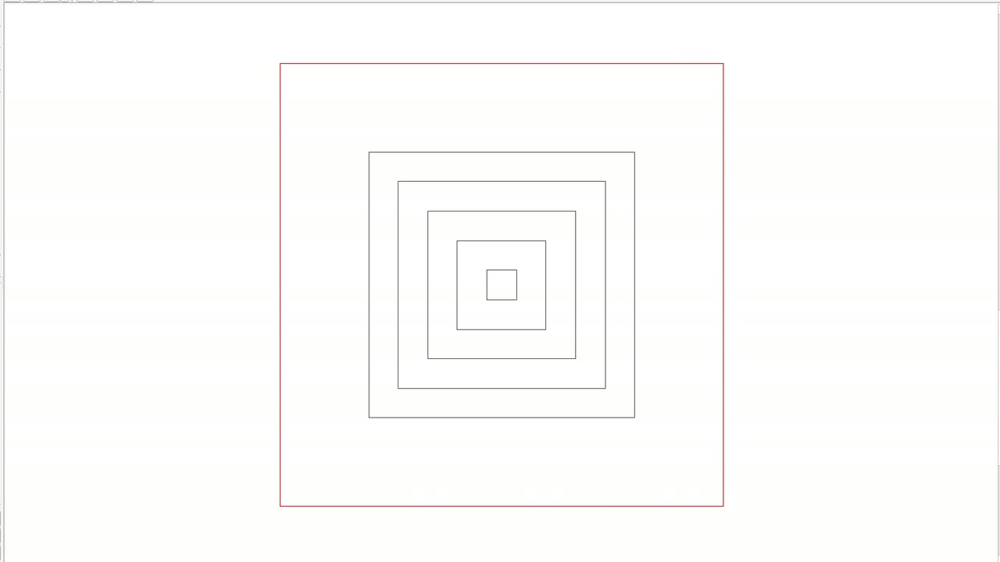
Solid supportsExposure of supports that consist of areas.
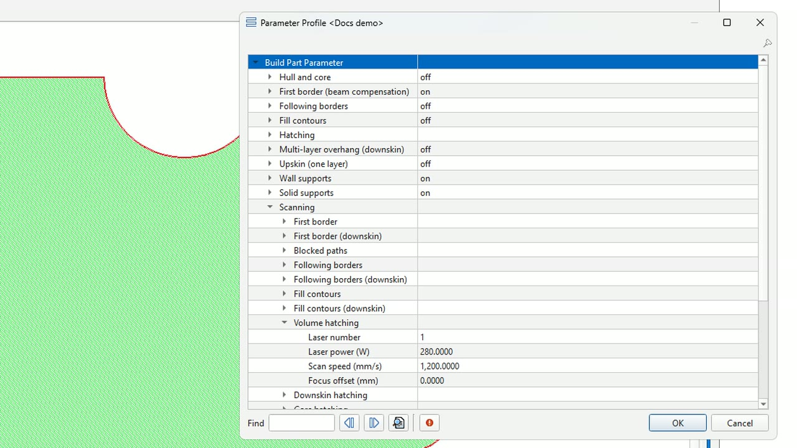
ScanningLaser, power, speed and focus of every vector type.
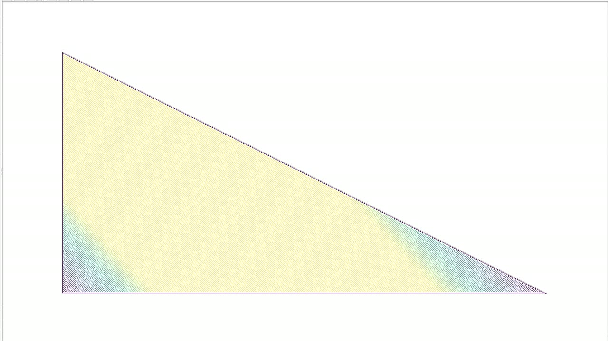
Power optimizationLower laser power for short hatch vectors, where the heat has no time to spread.
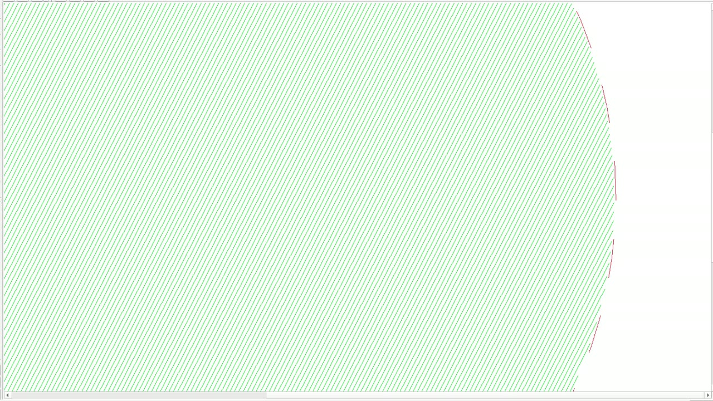
Contour optionsWhere every contour starts, and stippled (dashed) contours.

Hatch rotation and limitation windowTurns the hatch from layer to layer and can keep the lines away from the gas flow direction.
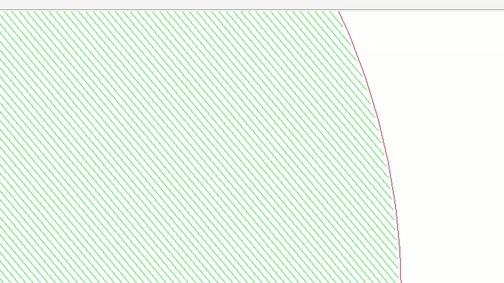
Layer skipExposes a contour, hatch or support type only on every n-th layer.